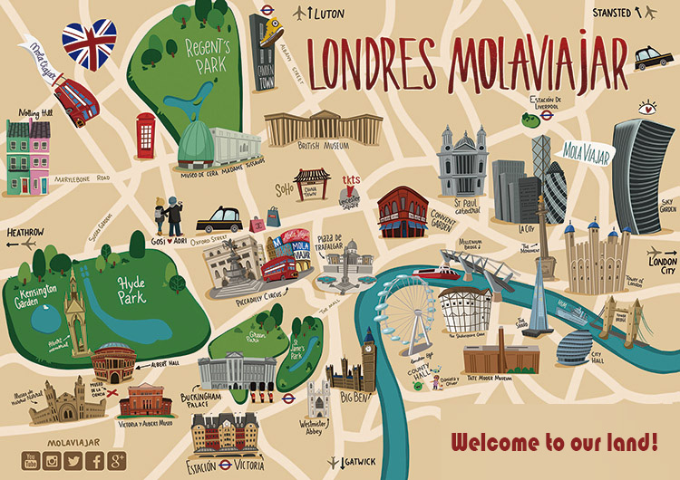

<app-londres-header class="sticky w-full"></app-londres-header>

<div id="mapa" class="min-h-screen">
  <div class="flex justify-center">
    
  </div>
</div>

<app-footer class="fixed bottom-0 w-full"></app-footer>